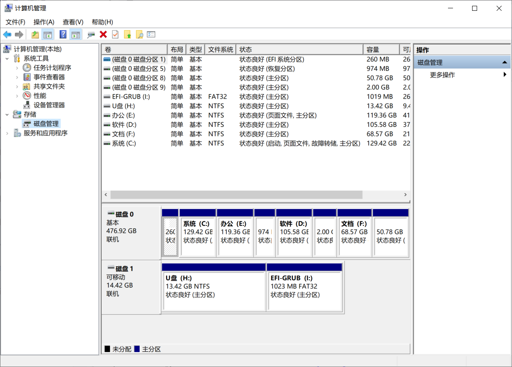
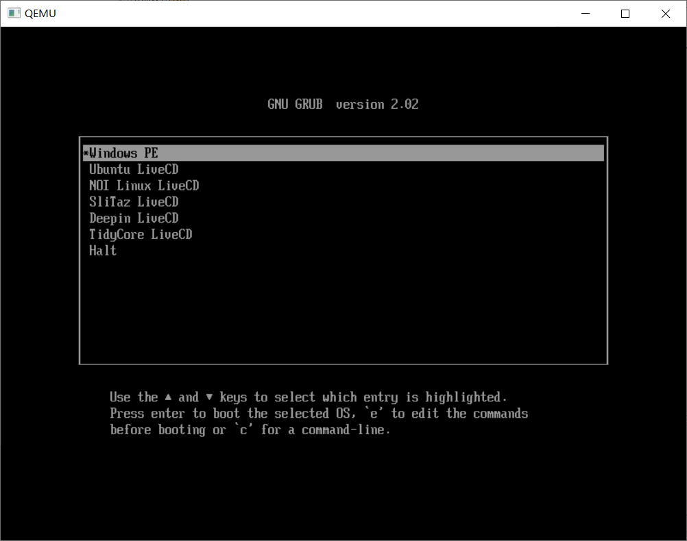

Index - GRUB2制作一个多启动的U盘（UEFI）
请确保您的电脑是64位UEFI启动！
·准备
1.下载微PE，Ubuntu等ISO文件，以及GRUB2.02，详情见附录1
2.一个U盘（8G以上），一个好用的文本编辑器，一个可以解压ISO文件的软件
3.可以快速下载的互联网
·步骤
1.打开计算机管理，在左侧列表处选择“磁盘管理”

2.将U盘分区：①将U盘原有的分区删除（右键“删除卷”注意：这将擦除U盘所有的数据！）
②创建两个分区（右键“新建简单卷”）：第一个分区（NTFS，U盘容量减1GB）、第二个分区（FAT32，1GB），并分配盘符
3.解压下载的GRUB 2.02，打开cmd，进入解压的目录，运行：
grub-install.exe --target=x86_64-efi --efi-directory=第二个分区的盘符 --boot-directory=第二个分区的盘符 --bootloader-id=boot --modules="part_msdos fat normal"
（第二个分区的盘符例如：F:）
3.进入U盘的第二分区，发现多了这么几个文件：
进入grub文件夹，并创建一个名为“grub.cfg”的文件
4.进入U盘的第一分区，将下载好的Linux镜像文件直接复制进去；将微PE的镜像解压到第二分区根目录
5.打开第3步创建的“grub.cfg文件”，添加内容（“//”开头的内容为注释）：
insmod loopback //加载一些必要的库文件，类似于C++的 #include
insmod iso9660
insmod ntfs
insmod all_video
menuentry "Windows PE" { //微PE启动项
chainloader /EFI/BOOT/wepe/bootx64.efi
//在微PE的ISO文件里找到这个bootx64.efi文件，复制到这里；这里这行代码表示从bootx64.efi启动
}
menuentry "Ubuntu LiveCD" --class=ubuntu {
echo 'Loading Ubuntu LiveCD ...' //输出提示信息
set isofile=/ubuntu-20.04.iso //定义ISO位置
loopback loop (hd0,1)$isofile //挂载ISO，(hd0,1)表示U盘的第一分区
linux (loop)/casper/vmlinuz boot=casper iso-scan/filename=$isofile //启动linux
echo 'Loading Initrd ...'
initrd (loop)/casper/initrd //初始化内存盘
}
menuentry "NOI Linux LiveCD" --class=ubuntu {
echo 'Loading NOI Linux LiveCD ...'
set isofile=/noilinux-1.4.1.iso
loopback loop (hd0,1)$isofile
linux (loop)/casper/vmlinuz boot=casper iso-scan/filename=$isofile
echo 'Loading Initrd ...'
initrd (loop)/casper/initrd.lz //初始化内存盘（文件名不一样）
}
... //省略，自己想要更多自己添加
menuentry "Halt" --class=halt --hotkey=s{ //关机
halt
}
6.保存文件。
7.重新启动计算机，在启动时按BIOS键（每个电脑不一样，百度一下），选择U盘启动项，完成！
效果图：

·附录
1.上述提到的内容下载地址：
GRUB 2.02下载地址：GRUB2.02 - Gitee.com
微PE官网：微PE工具箱 - 最好用的WinPE装机维护工具 (wepe.com.cn)
Ubuntu官网：企业开源和Linux | Ubuntu
NOI Linux下载地址：NOI linux系统及安装文档下载(2016年10月8日更新)
Deepin LiveCD下载地址：最新版本 – 深度科技社区 (deepin.org)
2.国内下载镜像站：
中科大开源软件镜像站：USTC Open Source Software Mirror
清华大学开源软件镜像站：清华大学开源软件镜像站 | Tsinghua Open Source Mirror
网易开源软件镜像站：欢迎访问网易开源镜像站 (163.com)